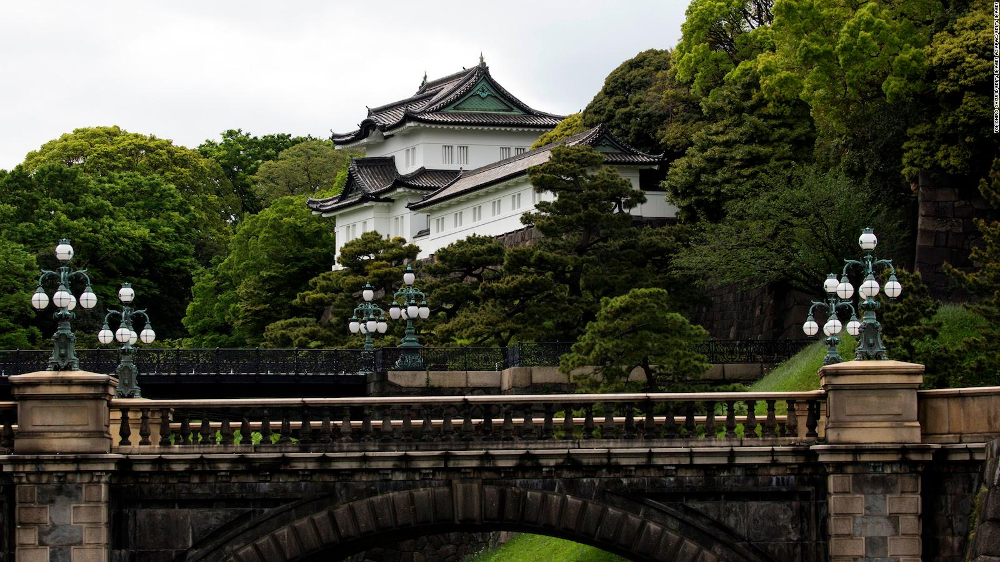

A imagem da esquerda é o Imperial Palace em Tokyo e a imagem da direita é o Meguro River onde se observam a linda paisagem repleta de Cherry Blossoms.

Tsuko G.
See your body into the moonlight
Even if I try to cancel
All the pictures into the mind
There's a flashing in my eyes
Don't you see my commission, the nation
Has gone running again
Can't you see now, illusions
Right into your mind
Deja Vu!
I've just been in this place before
(Higher on the street)
And I know it's my time to go
Calling you, and the search is a mystery
(Standing on my feet)
It's so hard when I try to be me, woah
Whooooaaa!!
Deja Vu!
I've just been in this time before
(Higher on the beat)
And I know it's a place to go
Calling you and the search is a mystery
(Standing on my feet)
It's so hard when I try to be me
Yeeeaaaaaah!!
See the future into the present
See my past leaves in the distance
Try to guess now what's going on
And the band begins to play…